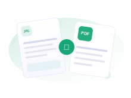
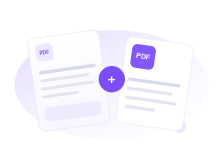

How to Convert a PDF to Word Online: A Step-by-Step Guide
Learn how to convert a text-based or scanned PDF into an editable DOCX file, what to check after conversion, and when OCR is needed.
Read guide ↗Convert DOCX documents to PDF-ready files, organize PDFs, extract text from images and handle everyday document tasks in one browser-based workspace.
Convert a DOCX Word document into a print-ready page, then save it as PDF from your browser.
When the print window opens, select Save as PDF as the destination. Check page breaks, tables and images before saving. Older .DOC files are not supported.
Choose a tool and process your files in your browser.
 PDF to ImagesExport PDF pages as PNG filesOpen tool ↗
PDF to ImagesExport PDF pages as PNG filesOpen tool ↗ Images to PDFCombine images into one PDFOpen tool ↗
Images to PDFCombine images into one PDFOpen tool ↗
Merge PDFJoin multiple PDF filesOpen tool ↗
Split PDFExtract selected PDF pagesOpen tool ↗ Compress PDFReduce image-heavy PDF sizeOpen tool ↗
Compress PDFReduce image-heavy PDF sizeOpen tool ↗ Image to Text OCRExtract text from screenshotsOpen tool ↗
Image to Text OCRExtract text from screenshotsOpen tool ↗ Batch OCRRead text from multiple imagesOpen tool ↗
Batch OCRRead text from multiple imagesOpen tool ↗ Image ConverterConvert JPG, PNG and WebP filesOpen tool ↗
Image ConverterConvert JPG, PNG and WebP filesOpen tool ↗ Background RemoverRemove plain solid backgroundsOpen tool ↗
Document ScannerCrop a page before OCROpen tool ↗
Background RemoverRemove plain solid backgroundsOpen tool ↗
Document ScannerCrop a page before OCROpen tool ↗ QR Code GeneratorCreate a QR code from text or URLOpen tool ↗
QR Code GeneratorCreate a QR code from text or URLOpen tool ↗
Practical explanations for common PDF, Word and OCR tasks.
Learn how to convert a text-based or scanned PDF into an editable DOCX file, what to check after conversion, and when OCR is needed.
Read guide ↗Understand when an AI assistant is useful for working with PDF content and when a dedicated PDF-to-DOCX converter is the better tool.
Read guide ↗Learn the difference between selectable PDF text and scanned page images, and why OCR is needed to make scanned documents editable.
Read guide ↗